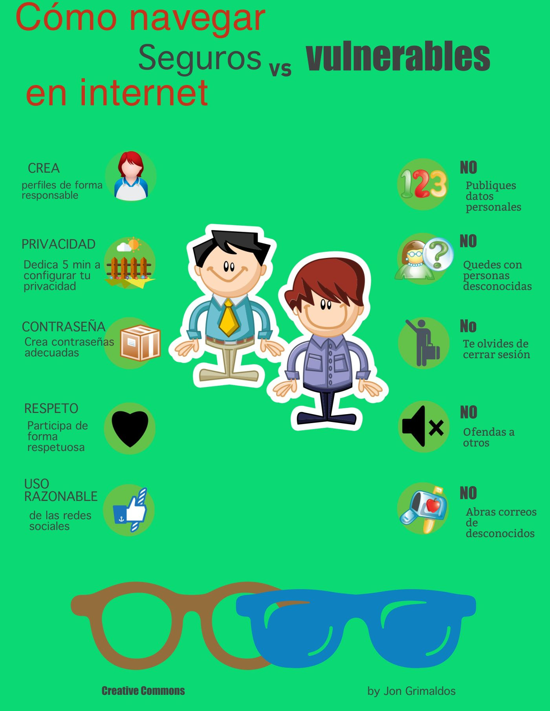

Mantén tus sistemas actualizados: Asegúrate de que tu sistema operativo, software antivirus, navegadores web y plugins estén siempre actualizados con las últimas versiones y parches de seguridad.
Utiliza contraseñas seguras: Usa contraseñas únicas y robustas para cada cuenta. Deben contener una combinación de letras mayúsculas y minúsculas, números y caracteres especiales. Considera el uso de un gestor de contraseñas para administrarlas de forma segura.
Habilita la autenticación de dos factores (2FA): Agrega una capa adicional de seguridad a tus cuentas mediante la autenticación de dos factores. Esto requiere un segundo método de verificación, como un código enviado a tu teléfono móvil, además de la contraseña.
Evita hacer clic en enlaces sospechosos: No hagas clic en enlaces de correos electrónicos, mensajes o sitios web que parezcan sospechosos o no solicitados. Estos pueden ser phishing o malware.
Utiliza conexiones seguras: Al acceder a sitios web, asegúrate de que la conexión sea segura utilizando HTTPS. Evita conectarte a redes Wi-Fi públicas no seguras, ya que pueden ser vulnerables a ataques de intermediarios.
Mantén un respaldo regular de tus datos: Realiza copias de seguridad periódicas de tus archivos importantes y verifica que los datos se estén respaldando correctamente. Esto puede ayudarte a recuperarte en caso de un ataque de malware o pérdida de datos.
Ten cuidado con lo que compartes en línea: Evita publicar información personal sensible en redes sociales u otros sitios web públicos. Los ciberdelincuentes pueden utilizar esta información para realizar ataques dirigidos o robo de identidad.
Educa a tus empleados o familiares: Si estás en un entorno empresarial, asegúrate de capacitar a tus empleados sobre las mejores prácticas de seguridad informática. En el ámbito familiar, educa a tus seres queridos sobre cómo protegerse en línea.
Instala software de seguridad confiable: Utiliza un software antivirus/antimalware confiable y manténlo actualizado. Escanea regularmente tu sistema en busca de amenazas y elimina cualquier software malicioso detectado.
Sé escéptico: Desconfía de los correos electrónicos, mensajes o sitios web que parezcan demasiado buenos para ser verdad o que te pidan información personal o financiera sensible.
